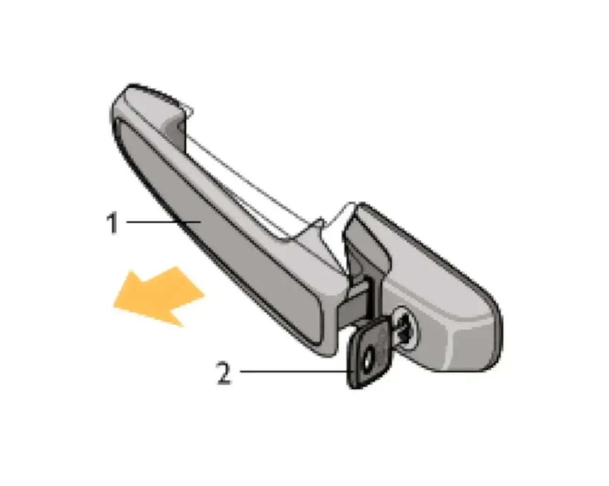
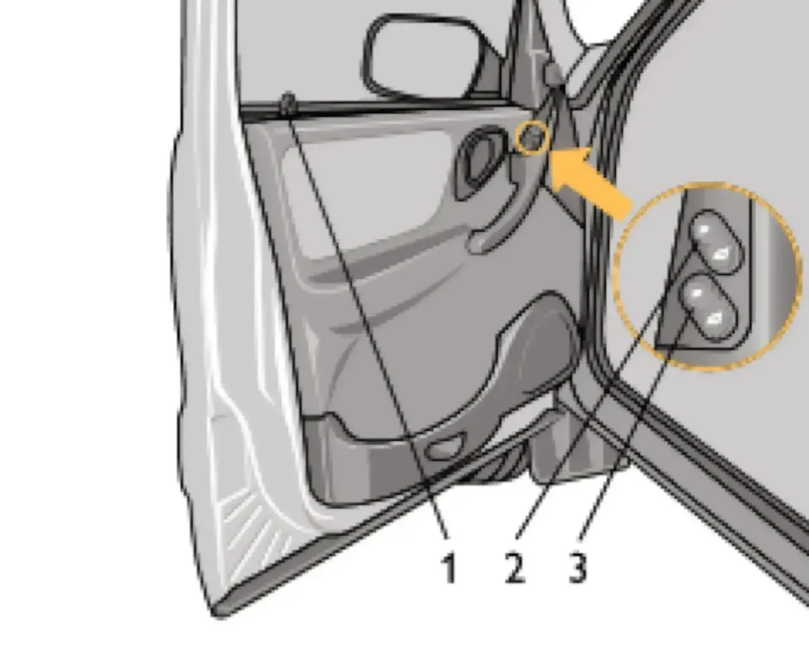
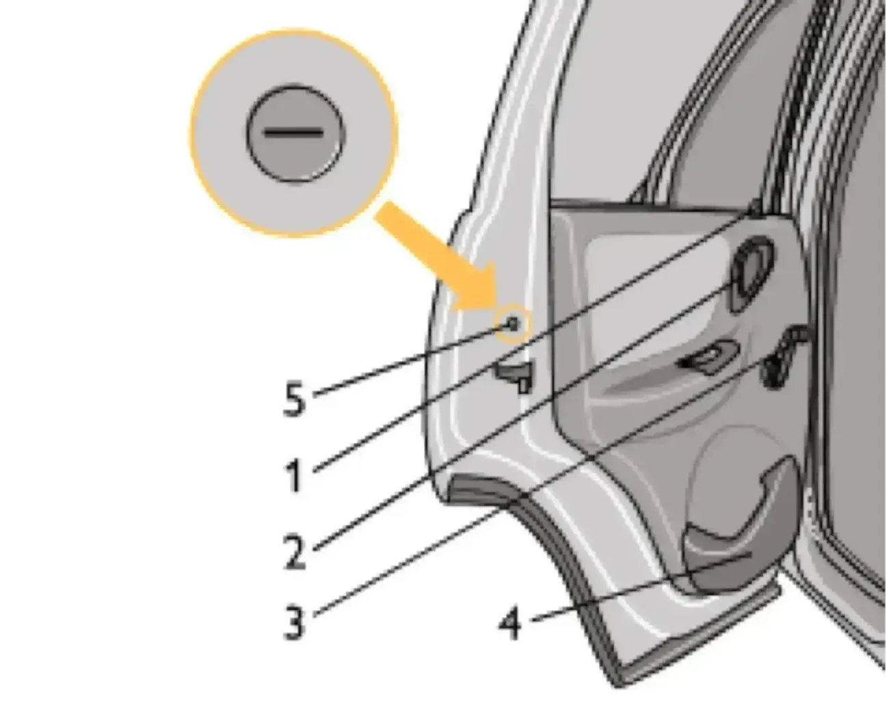
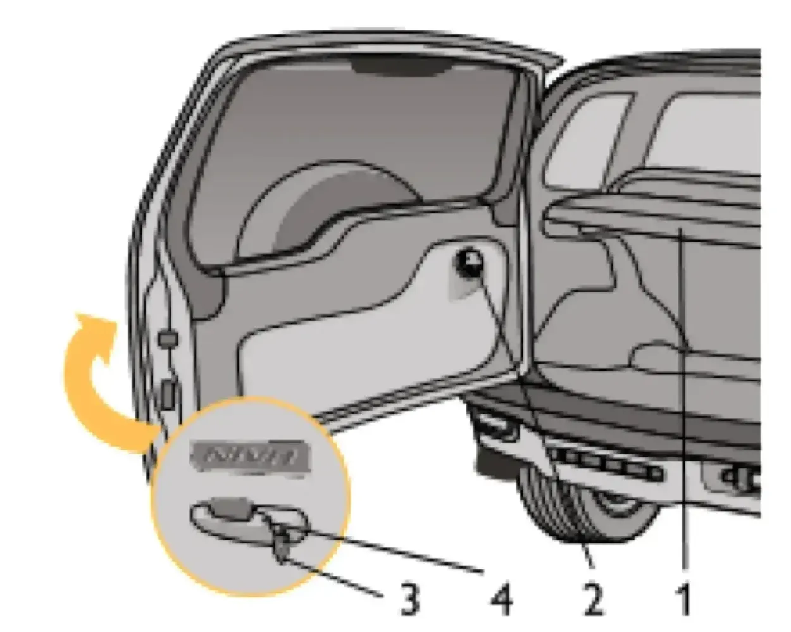

Двери
Двери открываются: снаружи — за ручку в направлении стрелки, а изнутри — поворотом на себя рукоятки. Если замок заблокирован, то ручка и рукоятка имеют холостой ход.

Передние двери блокируются: снаружи — ключом; изнутри — нажатием на кнопку блокировки замка. Блокировать замок можно только при закрытых дверях.
Для подъёма и опускания стёкол передних дверей используются электростеклоподъёмники. Нажатием на вогнутую или выпуклую часть клавиши переключателя стеклоподъёмника, расположенного на обивке двери, можно опустить или поднять стекло на нужную величину. После прекращения нажатия клавиша автоматически устанавливается в среднем положении, и стекло останавливается в любой выбранной Вами позиции. Дополнительная клавиша на двери водителя управляет электроприводом стеклоподъёмника правой передней двери. Клавиши подсвечиваются, если включено наружное освещение.

При закрытии окон с электрическими стеклоподъёмниками возможно защемление пальцев рук и других частей тела, что может привести к серьёзной травме. Поэтому при пользовании электрическими стеклоподъёмниками будьте внимательны, особенно если в автомобиле находятся дети.
Не разрешайте детям пользоваться переключателями электростеклоподъёмников! Выходя из автомобиля, обязательно вынимайте из замка ключ зажигания, чтобы отключить электростеклоподъёмники и избежать случайного травмирования оставшихся в автомобиле пассажиров. Не высовывайте из открытых окон автомобиля руки или другие части тела.
Задние двери блокируются изнутри салона нажатием на кнопку блокировки замка, как при открытой, так и при закрытой двери. Для опускания и подъёма стекла задних дверей используются механические стеклоподъёмники, которые приводятся в действие рукояткой. Стекло задней двери опускается не полностью.

Если на заднем сиденье находятся дети, рекомендуется ключом зажигания повернуть шлиц защёлки на 90°. В левой двери защёлку необходимо поворачивать по часовой стрелке, а в правой — против часовой стрелки. В этом случае при поднятой кнопке блокировки дверь открывается только снаружи. Для обеспечения возможности открывания дверей изнутри поверните шлиц защёлки в обратном направлении.
Дверь задка с боковыми петлями открывается за ручку и при необходимости может быть заблокирована только снаружи поворотом ключа против часовой стрелки. За обивкой двери задка расположен бачок омывателя стекла двери задка. Полка отделяет багажное отделение от салона. Для удобства пользования дверь задка имеет три фиксированных положения в открытом состоянии.

Во время стоянки автомобиля в тёмное время суток при открытой на максимальный угол двери задка используйте знак аварийной остановки.
В вариантном исполнении автомобили укомплектованы системой электроблокировки замков дверей, которая позволяет производить блокировку замков всех дверей при запирании ключом или при нажатии на кнопку блокировки замка двери водителя. Полное разблокирование замков всех дверей осуществляется при отпирании замка двери водителя.